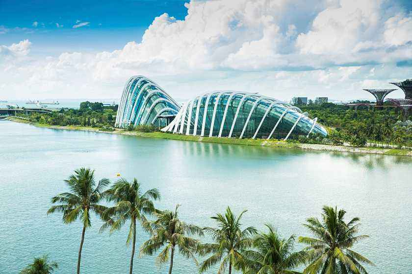
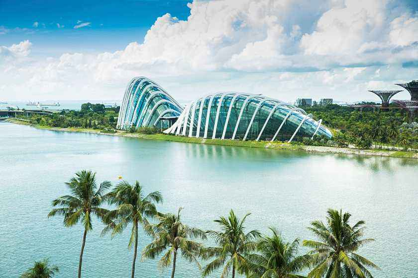

morly旅游圈
新加坡共和国（英语：Republic of Singapore），简称新加坡，旧称新嘉坡、星洲或星岛，别称为狮城，是东南亚的一个岛国，政治体制实行议会制共和制。新加坡北隔柔佛海峡与马来西亚为邻，南隔新加坡海峡与印度尼西亚相望，毗邻马六甲海峡南口，国土除新加坡岛（占全国面积的88.5%）之外，还包括周围63个小岛。 新加坡面积不大，但是却景色秀美，而且环境迷人，这里的环境卫生十分的干净，来到新加坡旅游的时候，我们可以体会到荷兰村的欧美风情，在这里我们还可以参加一些当地的活动，尤其是一些自然景观会使你流连忘返，在新加坡我们可以，搭上全球最高的飞行者摩天轮，欣赏整个滨海湾的美景，所以在2月份去新加坡游玩是十分值得推荐的。
二月的新加坡景色秀美，而且温暖适宜，这时候的平均气温大约是24到32摄氏度之间，气候没有什么太大的变化，来这里游玩的时候，比较温润潮湿，来这里游玩的时候游客一定要做好，防雨的工作，要带一把雨伞，也可以准备一个雨披，并且要做好防晒的工作，你可以，准备一个太阳帽，或者是一个防晒服。 新加坡是一个较为发达的资本主义国家，被誉为“亚洲四小龙”之一，其经济模式被称作为“国家资本主义”。根据2018年的全球金融中心指数（GFCI）排名报告，新加坡是继纽约、伦敦、香港之后的第四大国际金融中心，也是亚洲重要的服务和航运中心之一 [2-3] 。新加坡是东南亚国家联盟（ASEAN）成员国之一，也是世界贸易组织（WTO）、英联邦（The Commonwealth）以及亚洲太平洋经济合作组织（APEC）成员经济体之一。
新加坡历史可追溯至3世纪，当时已有土著居住，其最早文献记载源自3世纪东吴将领康泰所著的《吴时外国传》，据新加坡学者许云樵考证，蒲罗中是马来语“Pulau Ujong“之对音。”蒲罗中“是新加坡岛最古老的名称，意为“马来半岛末端的岛屿”， [10] 比淡马锡（明朝把新加坡称作“淡马锡”）早一千多年。8世纪属室利佛逝。
1320年，元朝派人到一个叫“龙牙门”的地方寻找大象，这或许指的是吉宝海港。1330年前后，一名叫汪大渊的中国人到来，称这个居留地为“龙头”，并说已经有中国人在此居住。最早把新加坡叫做淡马锡（或海城）的称谓出现于1365年的《爪哇史颂》。
新加坡岛开始受到重视是在14世纪，来自室利佛逝的王子拜里米苏拉在该区域建立了马六甲苏丹王朝，后来葡萄牙人在1613年焚毁了河口的据点。18世纪至1824年，新加坡属柔佛王国的一部分。
新加坡位于北纬1°18′，东经103°51′，毗邻马六甲海峡南口，北隔狭窄的柔佛海峡与马来西亚紧邻，并在北部和西部边境建有新柔长堤和第二通道相通。南隔新加坡海峡与印度尼西亚的民丹岛和巴淡岛都有轮渡联系。新加坡的土地面积是719.1平方公里海岸线总长200余公里，全国由新加坡岛、圣约翰岛、龟屿、圣淘沙、姐妹岛、炯岛等六十余岛屿组成，最大的三个外岛为裕廊岛、德光岛和乌敏岛。由于填海工程形成新的陆域，将增添额外100平方公里的土地。新加坡的标准时间为UTC+8，较其地理位置时间快1小时。
内容整理至网络，如有侵权，请联系我们！1255394075@qq.com
 
